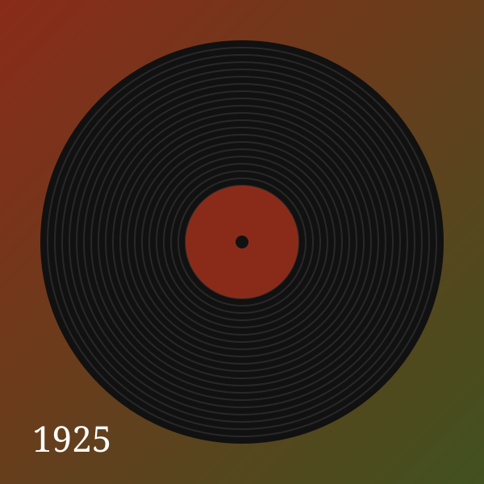

Al Craver [Vernon Dalhart], “Sentenced to Life Behind These Grey Walls” (Columbia 15060-D, 1925)

Background: The full Columbia title explicitly frames the subject as a life sentence and confinement. This is a strong title-level punishment lead, but the title alone does not tell us whether the singer accepts the sentence, protests wrongful conviction, laments separation, or speaks in another dramatic register. No verified lyric transcription has yet been found for matrix W141311.
Proposed role: Penal sentence / possible grievance testimony